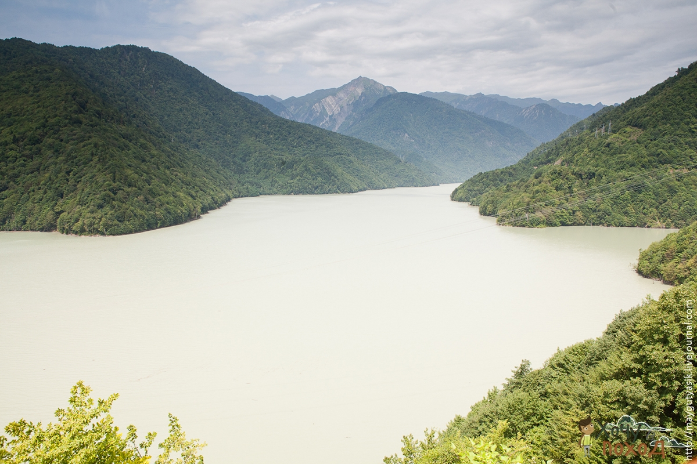

Сванетия — край тысячи башен
План маршрута
1 день
Кутаиси — Ингурийская ГЭС — Местия
Группа встречается сразу на территории Грузии — в аэропорту Кутаиси обычно около 10ти утра. Встретившись в аэропорту,
группа совершает трансфер в Местию, по пути делаем остановку возле Ингурийской ГЭС. Приезжаем в Местию уже ближе к вечеру,
сразу же разбиваем лагерь. В кемпинге есть приличный туалет и душ, но нельзя разводить костры.



2 день
Озера Корульди. Музей Михаила Хергиани.
Сегодняшний день будет посвящен акклиматизации. Сама Местия находится на высоте 1400 метров над уровнем моря, и чтобы
двигаться дальше в горы нужно привыкнуть к другому воздуху здесь. Поэтому сегодня мы совершим радиальный выход на озера
Корульди, и нам предстоит набрать еще 1000 метров, слава богу, без рюкзаков. Это будет нашей разминкой, которая поможет понять,
на какие высоты нужно будет идти дальше, но уже с рюкзаками. Посетив озера, возвращаемся в Местию в тот же кемпинг. Вечером
прогулка по Местии, источник нарзана и посещение дома музея известного альпиниста Михаила Хергиани.


3 день
Переход в Адиши
Далее идем классическими переходами, привычными для Кавказа. Из долины поднимаемся на перевал, а потом спускаемся в очередную
долину на ночлег. Виды прекрасные — вершины Главного Кавказского хребта как на ладони, воздух вкусный, горы величественные. Поход
идет своим чередом. Ночевка у деревни Адиши у реки перед бродом.


4 день
Адиши — перевал Чхутниери — Ипрали
Из деревни Адиши (2040 м) переходим в деревню Ипрали (1890 м). Сегодня водный день, потому что мы будем двигаться по правому
берегу реки Адишисчали. У ледника Лардаади переходим реку вброд и идем дальше. По всему пути у нас будет вдоволь ручейков и
потоков, которые придется переходить, так что готовьтесь, что обувь целый день будет мокрая. Сегодня же мы увидим руины Халде — это
древнее поселение стало легендарным символом борьбы непримиримых сванов с завоевателями. Ночуем в Ипрали.


5 день
Ушгули
Сегодня мы должны попасть в деревню Ушгули (2020 м) — это прелюбопытнейшая древняя община, с неплохо сохранившимися образчиками
сванской архитектуры. Здесь и традиционных домов-башен много, и церковь Богоматери (на сванском языке, Ламария) XI века, и дома
обычных поселенцев. К тому же, Ушгули считается второй из самых высокогорных поселений в Европе, выше только деревня Куруш (2560 м)
в Дагестане. В Ушгули нас ждет двухчасовая радиалка к монастырю и посещение музея в сванской башне. Затем набор высоты и ночевка у
последнего родника на сванском хребте — на высоте 2700 м.


6 день
Сванский хребет. Чвелпи. Лантехи. Кобулетти.
Сегодня у нас длинный и сложный день. Вначале нам нужно набрать высоту до вершин Сванского хребта, а затем спуститься на 1100 м.
Расстояние за день 21 километр. К вечеру не будем чувствовать ног :). Ах да, забыл, на Сванском хребте очень красивые озера, если вы
конечно еще способны будете воспринимать красоту в тот день :). Дальше едем рейсовым автобусом или заказной маршруткой в Кобулетти на
море в кемпинг. По пути будем проезжать Зугдиди, тем кому на море не нужно, могут выйти и поехать в Тбилиси или еще куда нибудь.
Остальная группа едет на море, отдыхать после покоренных перевалов и умопомрачительных пейзажей.
Карта маршрута
План маршрута
1 день
Кутаиси — Ингурийская ГЭС — Местия
Группа встречается сразу на территории Грузии — в аэропорту Кутаиси обычно около 10ти утра. Встретившись в аэропорту, группа совершает трансфер в Местию, по пути делаем остановку возле Ингурийской ГЭС. Приезжаем в Местию уже ближе к вечеру, сразу же разбиваем лагерь. В кемпинге есть приличный туалет и душ, но нельзя разводить костры.
2 день
Озера Корульди. Музей Михаила Хергиани.
Сегодняшний день будет посвящен акклиматизации. Сама Местия находится на высоте 1400 метров над уровнем моря, и чтобы двигаться дальше в горы нужно привыкнуть к другому воздуху здесь. Поэтому сегодня мы совершим радиальный выход на озера Корульди, и нам предстоит набрать еще 1000 метров, слава богу, без рюкзаков. Это будет нашей разминкой, которая поможет понять, на какие высоты нужно будет идти дальше, но уже с рюкзаками. Посетив озера, возвращаемся в Местию в тот же кемпинг. Вечером прогулка по Местии, источник нарзана и посещение дома музея известного альпиниста Михаила Хергиани.
3 день
Переход в Адиши
Далее идем классическими переходами, привычными для Кавказа. Из долины поднимаемся на перевал, а потом спускаемся в очередную долину на ночлег. Виды прекрасные — вершины Главного Кавказского хребта как на ладони, воздух вкусный, горы величественные. Поход идет своим чередом. Ночевка у деревни Адиши у реки перед бродом.
4 день
Адиши — перевал Чхутниери — Ипрали
Из деревни Адиши (2040 м) переходим в деревню Ипрали (1890 м). Сегодня водный день, потому что мы будем двигаться по правому берегу реки Адишисчали. У ледника Лардаади переходим реку вброд и идем дальше. По всему пути у нас будет вдоволь ручейков и потоков, которые придется переходить, так что готовьтесь, что обувь целый день будет мокрая. Сегодня же мы увидим руины Халде — это древнее поселение стало легендарным символом борьбы непримиримых сванов с завоевателями. Ночуем в Ипрали.
5 день
Ушгули
Сегодня мы должны попасть в деревню Ушгули (2020 м) — это прелюбопытнейшая древняя община, с неплохо сохранившимися образчиками сванской архитектуры. Здесь и традиционных домов-башен много, и церковь Богоматери (на сванском языке, Ламария) XI века, и дома обычных поселенцев. К тому же, Ушгули считается второй из самых высокогорных поселений в Европе, выше только деревня Куруш (2560 м) в Дагестане. В Ушгули нас ждет двухчасовая радиалка к монастырю и посещение музея в сванской башне. Затем набор высоты и ночевка у последнего родника на сванском хребте — на высоте 2700 м.
6 день
Сванский хребет. Чвелпи. Лантехи. Кобулетти.
Сегодня у нас длинный и сложный день. Вначале нам нужно набрать высоту до вершин Сванского хребта, а затем спуститься на 1100 м. Расстояние за день 21 километр. К вечеру не будем чувствовать ног :). Ах да, забыл, на Сванском хребте очень красивые озера, если вы конечно еще способны будете воспринимать красоту в тот день :). Дальше едем рейсовым автобусом или заказной маршруткой в Кобулетти на море в кемпинг. По пути будем проезжать Зугдиди, тем кому на море не нужно, могут выйти и поехать в Тбилиси или еще куда нибудь. Остальная группа едет на море, отдыхать после покоренных перевалов и умопомрачительных пейзажей.